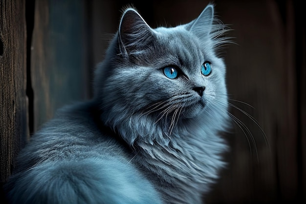

November 25, 2015
This Is My First Article
Cats are truly fascinating creatures.Their playful yet mysterious nature, soft fur, and curious eyes have charmed humans for centuries. They bring joy, comfort, and endless entertainment to our lives with their quirky antics and loving purrs.